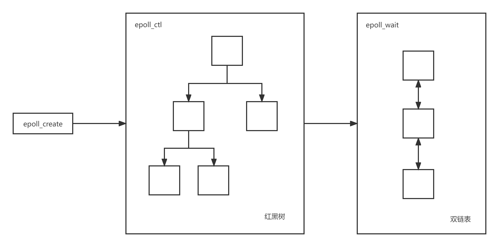

Epoll 介绍
Epoll 工作流程
Epoll 的大致工作流程如下所示：

int epoll_create(int size)
内核会产生一个 Epoll 实例数据结构并返回一个文件描述符，这个特殊的描述符是 epoll 实例的句柄。
size 参数只是告诉内核 Epoll 处理的事件的大致数目，而不是能够处理的事件的最大个数。在 Linux 最新的一些内核版本中，size 参数没有任何意义。
int epoll_ctl(int epfd, int op, int fd, struct epoll_event *event)
将被监听的描述符添加到红黑树或从红黑树中删除或者对监听事件进行修改。
op 参数用于说明操作类型：
EPOLL_CTL_ADD：添加一个需要监视的描述符EPOLL_CTL_DEL：删除一个描述符EPOLL_CTL_MOD：修改一个描述符
struct epoll_event 结构描述一个文件描述符 fd 的 epoll 行为：
typedef union epoll_data {
void *ptr; /* 指向用户自定义数据 */
int fd; /* 注册的文件描述符 */
uint32_t u32; /* 32-bit integer */
uint64_t u64; /* 64-bit integer */
} epoll_data_t;
struct epoll_event {
uint32_t events; /* 描述epoll事件 */
epoll_data_t data; /* 见上面的结构体 */
};
常用的 epoll 事件如下所示：
EPOLLIN：描述符处于可读状态EPOLLOUT：描述符处于可写状态EPOLLET：将epoll event通知模式设置成edge triggerEPOLLONESHOT：第一次进行通知，之后不再监测EPOLLHUP：本端描述符产生一个挂断事件，默认监测事件EPOLLRDHUP：对端描述符产生一个挂断事件EPOLLPRI：由带外数据触发EPOLLERR：描述符产生错误时触发，默认检测事件
int epoll_wait(int epfd, struct epoll_event *events, int maxevents, int timeout)
阻塞等待注册的事件发生，返回触发的事件的数目，并将触发的事件写入 events 数组中。
maxevents 是返回的 event 的最大数量。events 数组的长度应该与 maxevents 一致。timeout 是 epoll_wait 调用阻塞的时间上限。
Epoll 触发机制
Epoll 监控多个文件描述符的 IO 事件，支持边缘触发（edge trigger，ET）和水平触发（level trigger，LT）。
水平触发
对于读操作，只要文件描述符的读缓冲区不为空，触发可读事件。
对于写操作，只要文件描述的写缓冲区不满，触发可写事件。
边缘触发
当文件描述符的缓冲区状态发生变化时触发。
对于读操作：
- 当读缓冲区数据为空变为非空时，触发可读事件。
- 当读缓冲区接收到新数据时，即读缓冲区待读数据变多时，触发可读事件。
- 当读缓冲区有数据可读，且进程对相应的文件描述符进行
EPOLL_CTL_MOD修改EPOLLIN事件时，触发可读事件。
对于写操作：
- 当写缓冲区由不可写变为可写时，触发可写事件。
- 当有旧数据被发送走，即读缓冲区中的内容变少的时候，触发可写事件。
- 当写缓冲区有空间可写，且进程对相应的文件描述符进行
EPOLL_CTL_MOD修改EPOLLOUT事件时，触发可写事件。